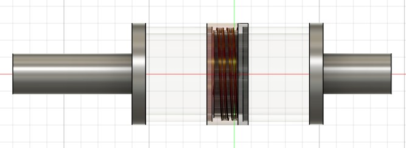

Improving on the 2nd iteration of my LED bails, I came up with another design that would be more durable. To recap, the issue faced was the resin being too weak. I still had to custom build the bails as I cant't find a suitable pre-made container but I need to create the threaded design for the custom body. Thus, I came up with a composite design, the non-transparent parts(the spigots) can be 3D printed for strength and the transparent parts(the body) can be made from pre-made materials and certain parts like the threads can be 3D-printed from PETG as that area is not prone to breaking. All the circuitry remains the same.
Circuit

This is the same schematic used in the previous design. The positive side of the battery is connected to the LEDs and two 10K ohm pullup resistors which in turn are connected to the bases of the transistors. The LEDs are then connected to the collector of the first transistor and the collector of the second transistor is connected to the emitter of the first. The hall sensors are connected to power, ground and each of the transistors. Unlike the old design, this one uses two transistors that act as an AND gate with the hall sensors as input.
Bail Body



This is the new body design, it consists of the main body, spigots and threads. The spigots are made of PLA, the
is made from acrylic tubing and the threads are made from PETG. All the parts are glued together using epoxy.Electronics

These are the 3D printed parts that make up the circuitry holder. It is designed to be easily printed and assembled using just glue. The circular parts are the "suspension" that would help to keep the circuitry from making contact with the body.


Above shown are the front and back views of the circuit assembly. The sensors now have a dedicated holder.
Improvements
This iteration is the strongest of the designs. The body seems to be able to tolerate the impact. The circuitry is doing very well due to the new holder. The only issue is that the circuitry holder's "suspension" is easy to break due to it being thin. While it did not break under testing, it broke due to me accidentally dropping it by itself when it was out of the body. So, overall the design works but I might need to tweak the suspension to prevent accidental breakage. Also, though its designed to be easily replaced, I need to disconnect the circuitry.